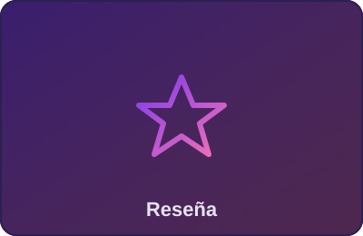

Reseña
Nova Ronin: el shooter que redefine el género este año
Analizamos a fondo el título más comentado del trimestre: combate táctico, narrativa ramificada y un apartado técnico que exige hardware de última generación.
Nova Ronin combina un sistema de coberturas dinámico con decisiones narrativas que alteran el tercio final de la campaña. El rendimiento en PS5 y Series X se mantiene estable en 60 fps con ray tracing activado, mientras que la versión de PC ofrece soporte nativo para ultrawide. El multijugador competitivo, aunque secundario, suma valor de rejugabilidad. Veredicto: sobresaliente en campaña, correcto en multijugador.